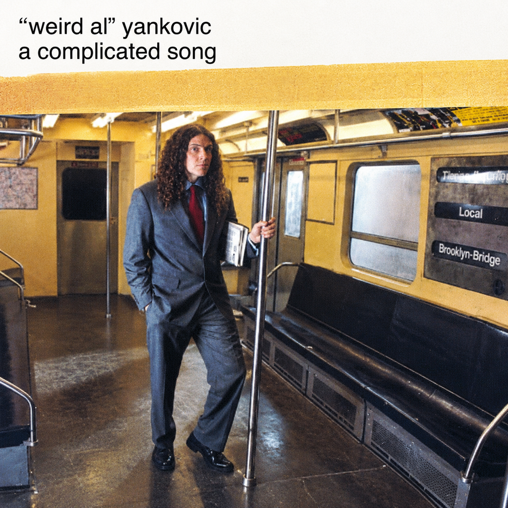

Imagem modificada com ajuda da inteligência artificial
“A Complicated Song” é uma paródia do sucesso "Complicated", da cantora Avril Lavigne. A música é composta por três narrativas: na primeira, o cantor lamenta estar com prisão de ventre; na segunda, descobre que tem parentesco com a própria namorada; e, na terceira, demonstra arrependimento por ter sido decapitado recentemente.
Em entrevistas, Weird Al revelou que possuía três paródias incompletas dessa canção e, em dúvida sobre qual delas concluir, optou por utilizar as três versões parciais, dedicando uma a cada estrofe. Por conta da primeira seção tratar de prisão de ventre causada pelo consumo de pizza, a faixa frequentemente circulou pela internet com o título incorreto de "Constipated". Além disso, o criador de conteúdo do YouTube NintendoCapriSun cita com frequência o verso "In the bathroom" desta canção.
Uh huh... extra cheese
Uh huh, uh huh... save a piece for me
Pizza party at your house
I went just to check it out
19 extra larges - what a shame
No one came
Just us, eatin' all alone
You said, "Take the pizza home"
"No sense lettin' all this go to waste"
So then I faced
Pizza all day
And every day
This cheese 'round the clock
Is gettin' me blocked
And I sure don't care
For irregularity
Tell me
Why'd you have to go and make me so constipated?
'Cause right now I'd do anything to just get my bowels evacuated
In the bathroom... I sit and I wait and I strain
And I sweat and I clench and I feel the pain
Oh, should I take the laxatives or have my colon irrigated?
No no no
I was feelin' pretty down
Till my girlfriend came around
We're just so alike in every way
I gotta say
In fact, I just thought I might
Pop the question there that night
I was kissing her so tenderly
But woe is me
Who would have guessed
Her family crest
I'd suddenly spy
Tattooed on her thigh
And son-of-a-gun
It's just like the one on me
Tell me
How was I supposed to know we were both related?
Believe me, if I knew she was my cousin we never would have dated
What to do now? Should I go ahead and propose
And get hitched and have kids with eleven toes
And move to Alabama where that kind of thing is tolerated?
No no no
I had so much on my mind
I thought maybe I'd unwind
Try out that new roller coaster ride
And the guide
Said not to stand
But that's a demand
That I couldn't meet
I got on my feet
And stood up instead
And knocked off my head, you see
Tell me
Why'd I have to go and get myself decapitated?
This really is a major inconvenience , oh man, I really hate it
Such a drag now... Can't eat, I can't breathe, I can't snore
I can't belch or yodel anymore
Can't spit or blow my nose or even read Sports Illustrated
Oh no
Why'd I have to go and get myself all mutilated? (Yeah yeah)
I gotta tell ya, life without a head kinda makes me irritated
What a bummer
Can't blink, I can't cough, I can't sneeze
But my neck is enjoyin' a pleasant breeze now
Haven't been the same since my head and I were separated
No no no